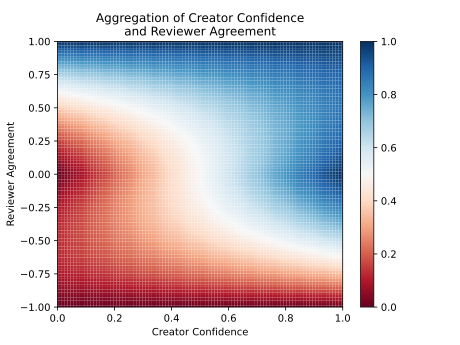

Confidence
SSSOM enables annotating confidence in several ways for individual mappings records and for mapping sets.
Confidence in Positive Semantic Mappings
The following example shows a high confidence (0.99) manually curated semantic mapping, between two disease resources.
#curie_map:
# mesh: https://meshb.nlm.nih.gov/record/ui?ui=
# MONDO: http://purl.obolibrary.org/obo/MONDO_
# oboinowl: http://www.geneontology.org/formats/oboInOwl#
# orcid: https://orcid.org/
# semapv: https://w3id.org/semapv/vocab/
# skos: http://www.w3.org/2004/02/skos/core#
#mapping_set_id: https://w3id.org/biopragmatics/biomappings/sssom/positive.sssom.tsv
subject_id subject_label predicate_id object_id object_label mapping_justification author_id confidence
MONDO:0000455 cone dystrophy skos:exactMatch mesh:D000077765 Cone Dystrophy semapv:ManualMappingCuration orcid:0000-0003-4423-4370 .99
The following example shows a medium-confidence semantic mapping produced through a lexical matching process. While this semantic mapping is actually incorrect, the lexical matching process assigned it a confidence of 0.65.
#curie_map:
# DOID: http://purl.obolibrary.org/obo/DOID_
# orcid: https://orcid.org/
# semapv: https://w3id.org/semapv/vocab/
# skos: http://www.w3.org/2004/02/skos/core#
# umls: https://uts.nlm.nih.gov/uts/umls/concept/
#mapping_set_id: https://w3id.org/biopragmatics/biomappings/sssom/negative.sssom.tsv
subject_id subject_label predicate_id object_id object_label mapping_justification confidence
DOID:0050052 Rocky Mountain spotted fever skos:exactMatch umls:C0035795 Rocky mountain spotted fever vaccine semapv:LexicalMapping 0.65
When not explicitly specified, confidence estimation algorithms should consider the confidence of a semantic mapping to be 1.0 by default.
Confidence with Negated Semantic Mappings
SSSOM has explicit support for curating negative semantic mappings (i.e.,
subject-predicate-object triples known to be false) by using the
predicate_modifier column.
The following example shows a highly confident negative semantic mapping, because Rocky Mountain spotted fever (a disease curated in DOID) is not the same as Rocky mountain spotted fever vaccine (a vaccine curated in UMLS).
#curie_map:
# DOID: http://purl.obolibrary.org/obo/DOID_
# orcid: https://orcid.org/
# semapv: https://w3id.org/semapv/vocab/
# skos: http://www.w3.org/2004/02/skos/core#
# umls: https://uts.nlm.nih.gov/uts/umls/concept/
#mapping_set_id: https://w3id.org/biopragmatics/biomappings/sssom/negative.sssom.tsv
subject_id subject_label predicate_id predicate_modifier object_id object_label mapping_justification author_id confidence
DOID:0050052 Rocky Mountain spotted fever skos:exactMatch Not umls:C0035795 Rocky mountain spotted fever vaccine semapv:ManualMappingCuration orcid:0000-0003-4423-4370 1.0
It's also possible to curate a negative semantic mapping with low confidence, but this is done less commonly in practice. Both human curators and semantic mapping prediction workflows typically focus on the production of positive knowledge.
Similarly, there are a large number of trivial negative semantic mappings that are typically ignored by curators and algorithms that consume semantic mappings.
When not explicitly specified, confidence estimation algorithms should consider the confidence of a negative semantic mapping to be 1.0 by default.
Estimating Overall Confidence in a Mapping Set
There are two places where the confidence in a mapping set can be reported:
- The creator of the mapping set can report their confidence in the mapping set
with the
mapping_set_confidenceslot in the mapping set's metadata. - The maintainer of a mapping set registry who indexes a mapping set can report their own confidence in the mapping set.
In some situations, it may be sufficient to choose a mapping set confidence based on knowledge about the scope/domain of the mapping set, who the curators were, etc.
Alternatively, an empirical confidence can be estimated by randomly sampling semantic mappings from the mapping set, manually reviewing them, then reporting the percentage that were correct as a decimal value between zero and one. This estimate becomes more accurate as the size of the sample increases, so it's suggested to sample a minimum 50-100 semantic mappings.
When not explicitly specified, confidence estimation algorithms should consider the registry confidence in a mapping set to be 1.0 by default.
Reviewer Agreement
In addition to the confidence slot which denotes the creator's confidence in
the accuracy of a mapping record, the reviewer_agreement slot allows for the
reviewer to state if they disagree or agree on a scale of \([-1, 1]\).
In the following example, the reviewer confidently agrees with the accuracy of the mapping that was previously asserted by another curator and denotes this with a high agreement (near 1.0):
# curie_map:
# CHEBI: http://purl.obolibrary.org/obo/CHEBI_
# mesh: http://id.nlm.nih.gov/mesh/
# orcid: https://orcid.org/
# semapv: https://w3id.org/semapv/vocab/
# skos: http://www.w3.org/2004/02/skos/core#
# mapping_set_id: https://github.com/mapping-commons/sssom/blob/master/examples/schema/reviewer_agreement.sssom.tsv
subject_id subject_label predicate_id object_id object_label mapping_justification author_id reviewer_id reviewer_agreement
CHEBI:10001 Visnadin skos:exactMatch mesh:C067604 visnadin semapv:ManualMappingCuration orcid:0000-0001-9439-5346 orcid:0000-0003-4423-4370 0.99
In the following example, a semantic mapping was predicted by the Biomappings workflow. The reviewer confidently disagrees with the accuracy of the mapping, and denotes this by adding a low agreement (near -1.0):
# curie_map:
# CHEBI: http://purl.obolibrary.org/obo/CHEBI_
# mesh: http://id.nlm.nih.gov/mesh/
# orcid: https://orcid.org/
# semapv: https://w3id.org/semapv/vocab/
# skos: http://www.w3.org/2004/02/skos/core#
# wikidata: http://www.wikidata.org/entity/
# mapping_set_id: https://github.com/mapping-commons/sssom/blob/master/examples/schema/reviewer_agreement.sssom.tsv
subject_id subject_label predicate_id object_id object_label mapping_justification mapping_tool_id reviewer_id reviewer_agreement
CHEBI:10057 9H-xanthene skos:exactMatch mesh:C002563 xanthan gum semapv:ManualMappingCuration wikidata:Q111239110 orcid:0000-0003-4423-4370 -0.99
In the following example, a semantic mapping was predicted by the Biomappings workflow. Because MeSH does not include detailed information about the chemical's structure, it's not clear to the reviewer if it should be mapped or not. Therefore, the reviewer denotes they are unsure of whether the semantic mapping is correct or not with an agreement of 0.0 (halfway between 1.0 for fully agree and -1.0 for fully disagree).
# curie_map:
# CHEBI: http://purl.obolibrary.org/obo/CHEBI_
# mesh: http://id.nlm.nih.gov/mesh/
# orcid: https://orcid.org/
# semapv: https://w3id.org/semapv/vocab/
# skos: http://www.w3.org/2004/02/skos/core#
# mapping_set_id: https://github.com/mapping-commons/sssom/blob/master/examples/schema/reviewer_agreement.sssom.tsv
subject_id subject_label predicate_id object_id object_label mapping_justification mapping_tool_id reviewer_id reviewer_agreement
CHEBI:127105 tribromosalicylanilide skos:exactMatch mesh:C004361 tribromsalan semapv:LexicalMatching wikidata:Q111239110 orcid:0000-0003-4423-4370 0.0
Aggregating Confidence for a Semantic Mapping Record
Hoyt et al. (2025) proposed a model for aggregating confidences on semantic mappings that was implemented in the Semantic Mapping Reasoner and Assembler. With the introduction of reviewer agreements, this section proposes one potential way of using it to weight confidence:
with creator confidence (\(c\)) and reviewer agreement (\(r\)). The \(\frac{r + 1}{2}\) term reweights the agreement score to work better on the \([0,1]\) range.
This function has the nice properties:
- When the reviewer's agreement is closer to 0.0, it doesn't have an effect on the creator's confidence
- When the reviewer's agreement is closer to -1.0 or 1.0, it should override the creator's confidence proportionally to how close it is to the extremes
Here's how it looks over all possible values for the creator confidence and reviewer agreement:

Code that produced this chart
import matplotlib.pyplot as plt
import numpy as np
def aggregate(c: float, r: float) -> float:
w = np.abs(r)
return (1 - w) * c + w * (r + 1) / 2
reviewer, creator = np.meshgrid(np.linspace(-1, 1, 100), np.linspace(0, 1, 100))
z = aggregate(creator, reviewer)
fig, ax = plt.subplots()
mesh = ax.pcolormesh(creator, reviewer, z, cmap="RdBu")
ax.set_xlabel("Creator Confidence")
ax.set_ylabel("Reviewer Agreement")
ax.set_title("Aggregation of Creator Confidence\nand Reviewer Agreement")
ax.axis([0, 1, -1, 1])
fig.colorbar(mesh, ax=ax)
plt.show()
plt.savefig("images/reviewer-agreement-aggregation.svg")